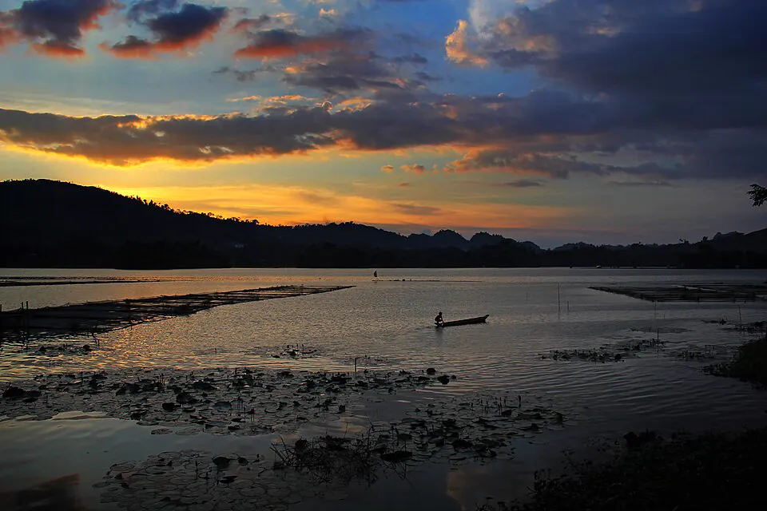

The cloth that comes in dreams
How T’boli women turn abaca into t’nalak, from the plant on the hillside to the polished cloth, and why the pattern is never drawn on paper.

In the hills around Lake Sebu, in South Cotabato, T’boli women weave a cloth that begins as a plant and, they say, as a dream. T’nalak is woven from abaca fibre in three colours only: the cream of the fibre itself, a deep brown-black and a rust red. Its patterns are not sketched or copied from a book. They are carried in memory, and many weavers say they first saw them in sleep.
The T’boli believe the designs are shown to the weaver by Fu Dalu, the spirit of the abaca. That belief shapes the whole craft. A weaver does not simply choose a pattern; she receives one, and she is responsible for it. During the long weeks of weaving, weavers and their husbands keep certain restraints as a sign of respect to Fu Dalu. The cloth that comes out of this is worn and exchanged at the most important moments of a family’s life.
We follow one piece of t’nalak through its whole life below. Scroll, and the model beside the text builds each stage.
From abaca to t’nalak, in seven stages
Drag the model to turn it. On the weaving stage, keep scrolling: the cloth grows row by row.
The abaca plant1 of 7
- 1
The abaca plant
Abaca looks like a banana plant and is a close cousin of it. Weavers take the fibre from mature, fruit-bearing plants, usually about a year and a half old, that grow on the slopes around the lake.
- 2
Stripping the fibre
The stalk is cut and split, and the long fibres are scraped free, cleaned and dried in the sun until they are pale and strong. The strands are then separated, one by one, by hand.
- 3
Tying the design
The fibres are knotted end to end into long threads and laid out as the warp. The weaver binds small bundles with resist ties, following the pattern she holds in memory. Wherever a tie sits, the dye cannot reach. The design is made before a single row is woven.
- 4
Dyeing
The threads go into dye baths, often more than once. The brown-black comes from the leaves of the k’nalum tree, boiled for days; the red comes from the roots of the loko tree. Cut the ties, and the bound sections stay the cream of the abaca.
- 5
Weaving on the backstrap loom
One end of the warp is tied to a post, the other to a strap around the weaver’s back. She leans back to keep the threads tight and passes the weft across, row by row. A single cloth can take more than four months.
- 6
Burnishing with a shell
The finished cloth is laid flat and rubbed hard with a cowrie shell. The friction warms the fibre and gives the surface its soft shine and its firm, even hand.
- 7
Kept, worn and given
The cloth goes to the family and to the occasion it was made for. Some pieces now reach markets and museums too, which is how most people outside Lake Sebu first meet it.
A pattern that belongs to someone
Because the design comes to a weaver in a dream, it is hers in a way a printed pattern never could be. Weavers have long been wary of copying, and of selling the cloth in ways that cut it loose from its meaning. When demand from shops and designers grew, some T’boli weavers spoke openly against turning t’nalak into a mass product. Their worry was not about money. It was about a sacred cloth being reduced to a print.
The design exists before the cloth does: it is tied into the warp, thread by thread, from memory.
This is also why the craft is hard to hand down. A pattern cannot be photocopied for an apprentice. It has to be learned at the loom, beside someone who already knows it.
Lang Dulay and the weavers after her
The best-known dreamweaver of Lake Sebu was Lang Dulay, a T’boli weaver born in 1928. In 1998 she received the Gawad sa Manlilikha ng Bayan, the national award for living masters of traditional crafts, the first person from Lake Sebu to do so. She kept weaving into old age and set up a centre where younger women could learn from her directly. She died in 2015.
Other Lake Sebu weavers have since received the same award, among them Rosie Sula and Barbara Ofong. Each award is a reminder that the craft lives in particular people, and that it survives only while someone is still learning it.

How to see it, and buy it, with care
Every July, South Cotabato holds the T’nalak Festival in Koronadal, with street dances and exhibits built around the cloth. In Lake Sebu itself, weaving centres welcome visitors who come to watch and to buy. If you buy, buy from the weavers or their cooperatives, ask for the weaver’s name, and treat the cloth as what it is: a piece of someone’s work and someone’s faith, not a souvenir print.
